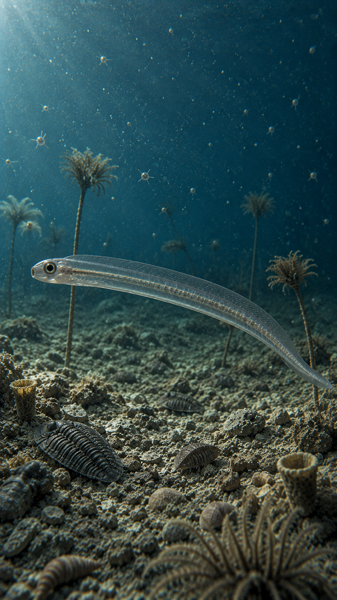
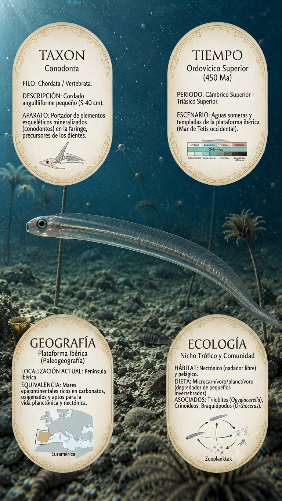
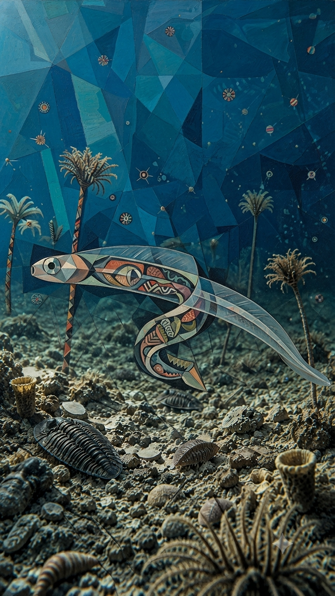
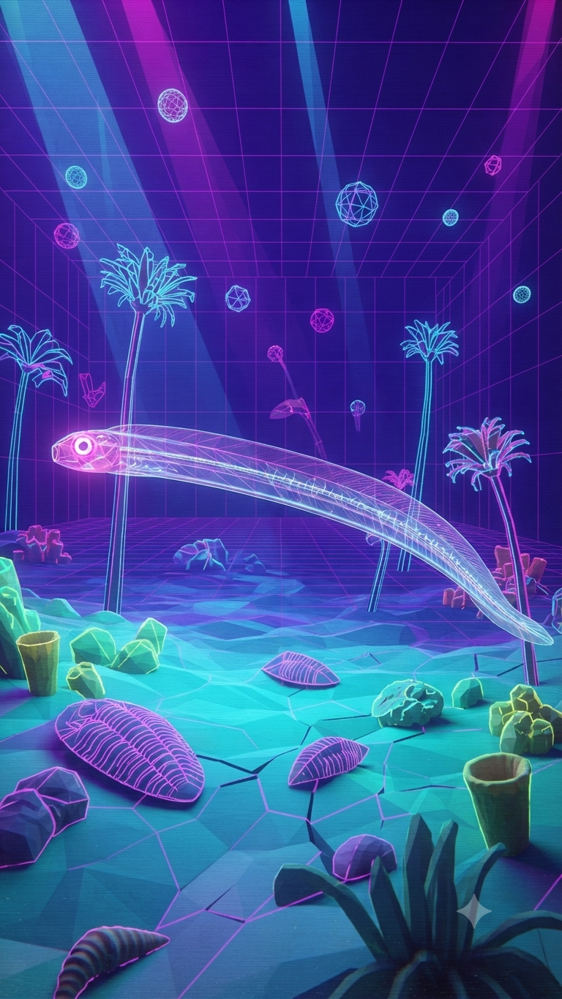

Paleoficha de PalEntropía

▶ Haz clic sobre la imagen para ver el Short oficial en YouTube.



TAXÓN: Conodonta
CLADO: Chordata / Vertebrata
DIETA: Microcarnívoro / planctívoro (depredador de pequeños invertebrados).
TAMAÑO: Pequeño organismo anguilliforme, habitualmente entre 5 y 40 cm de longitud.
LOCOMOCIÓN: Natación libre (nectónico) mediante ondulación lateral del cuerpo con soporte de una notocorda flexible.
TIEMPO: Ordovícico Superior (aprox. 450 Ma), con un rango general desde el Cámbrico Superior hasta el Triásico Superior.
GEOGRAFÍA: Cosmopolita en medios marinos. Plataforma Ibérica (Paleogeografía).
EQUIVALENCIA PALEOGEOGRÁFICA: Mares someros y templados de la plataforma ibérica, situados en el margen del Mar de Tetis occidental y paleocontinentes próximos.
AMBIENTE PALEOECOLÓGICO: Mares someros epicontinentales ricos en carbonatos, con abundantes plataformas y fondos marinos habitados por crinoideos, braquiópodos y trilobites.
ECOLOGÍA:
- Fauna secundaria: Trilobites, braquiópodos, crinoideos y plancton marino.
- Nicho ecológico: Nectónico depredador de la columna de agua, dotado de un aparato esquelético mineralizado en la faringe (precursor de los dientes vertebrados).
- Relaciones: Utilizados como fósiles guía fundamentales en bioestratigrafía debido a su rápida evolución y amplia distribución mundial.
CLIMA: Templado a cálido en aguas marinas someras del Ordovícico Superior.
ESTADO ECOLÓGICO: Extinto a finales del Triásico. Su registro fósil microestructural revolucionó la cronología estratigráfica y el estudio de los primeros vertebrados.